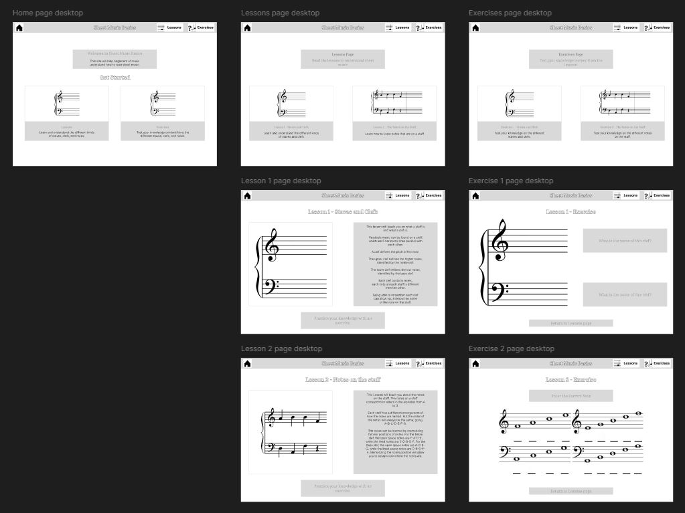

This course involved learning how to map out data using Figma.
Learning Figma allowed me to scope out and design a website without having to code it.
Figma allowed for an easier design process for creating a working site.
Sheet Music Basics is a learning site for learning beginner topics about sheet music.
This site was designed and created using my new skills of using Figma.
I focused on building a site dedicated to teaching users the basics of sheet music.
As a musician having a starting location for learning the basics of music would be a great asset.
